Revolut — The Shared Pouch
Product Design • 3 designers • Academic project • Mobile app • 2026
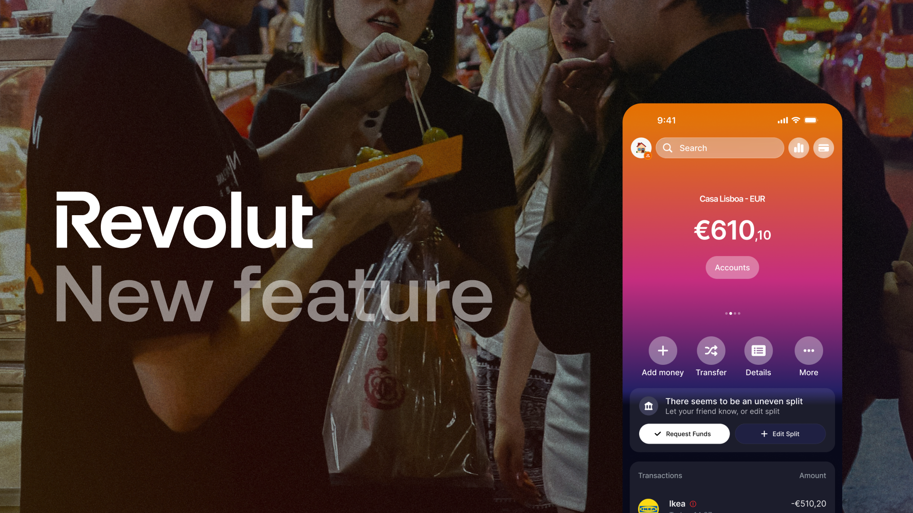
Context
Revolut handles individual spending better than almost anyone, but the moment users need to share money with a group, the experience breaks down. They leave the app. The Shared Pouch is a concept feature that changes that: a shared pool, a virtual card, no upfront payments, no manual settling, no legal complexity. Built natively into Revolut.
Group travel
Friends pool money for shared expenses. Everyone spends, nobody keeps score in real time.
Moving in together
A couple creates a Pouch for shared flat costs, furniture, deposits, utilities, without opening a formal joint account.
Shared project
Colleagues or flatmates pool for a specific goal. Spend when needed, settle automatically when done.
-

-
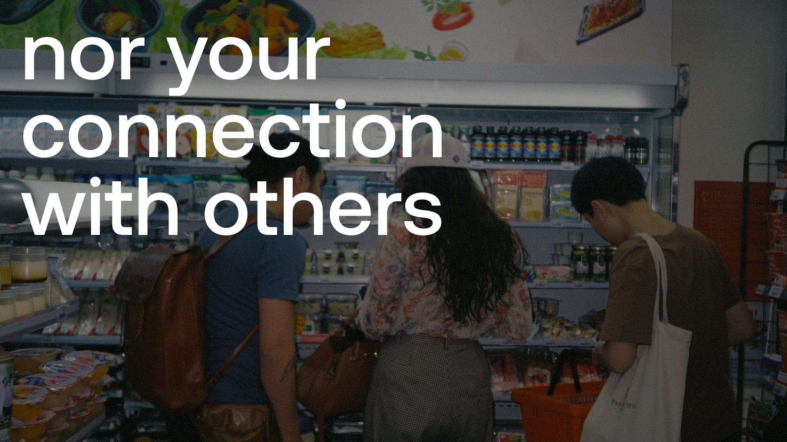
Market opportunity
Revolut is losing shared spending to third-party apps
52.5M
Revolut registered users globally in 2024
€3.1B
Split in shared travel expenses globally in 2024 (Tricount)
20.5M
MAU Total addressable market for shared expense apps
Research
The problem with shared finance tools
Group finance tools are built for specific niches, not for the messiness of everyday shared expenses. Users want a simpler way to spend directly from a shared pool, without the friction of traditional banking or the awkwardness of constant manual settling.
Mapping the gap
Simple tools like Splitwise force one person to pay upfront and manually chase others. Shared accounts solve the pooling problem but are legally complex to open and dissolve. Neither fits daily use. We mapped every shared finance tool against one question: does it let a group spend directly from a shared pool without friction? None of them did.
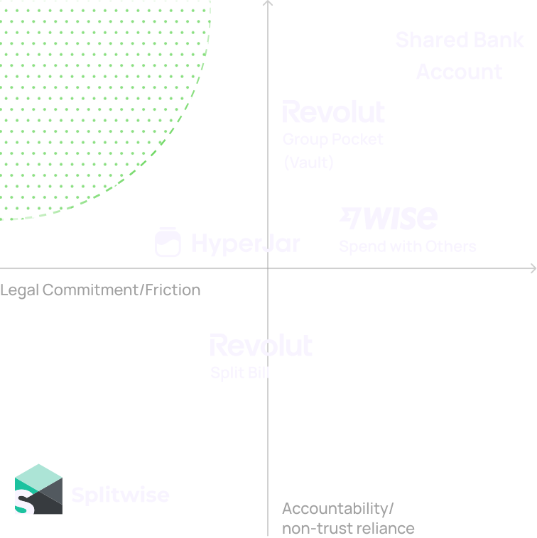
Personas
Who will be using the Pouch?
From our research (interviews and desk research) five distinct user types emerged, each stuck in the same gap for different reasons:
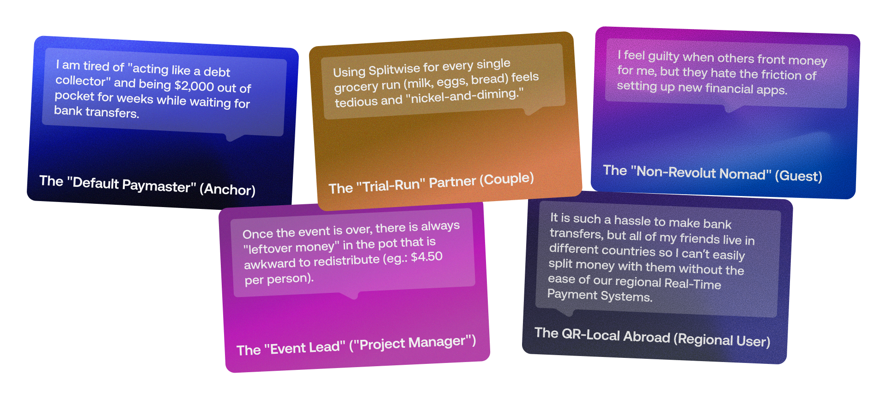
Problem statement
Shared money is full of friction, before, during, and after
Current group finance tools are too limited for the full range of shared-expense situations, either too simple and trust-reliant, or too legally complex for casual use. No tool owns the complete loop: pool, spend, and settle.
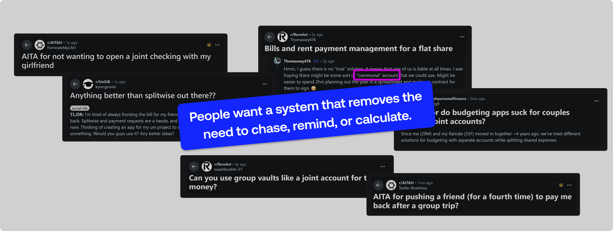
Current pain points
- Someone always fronts the money
- Tracking across currencies is manual
- Settlement can be delayed and become awkward
- Non-Revolut users are excluded
- No tool owns the full loop: pool, spend, settle
What does the Pouch need to be?
- Communal pool, no one fronts anything
- Spend directly from the shared account
- Guests join without a full Revolut account
- Multi-currency contributions to one pot
- Automated settlement when the Pouch closes
User flows
Managing a Shared Pouch
Anchors and managers have full control, tracking all spending, managing contributions, and controlling access to funds. This allows them to keep everything organised and cover shared expenses, even when not everyone has contributed yet.
Joining and using the Pouch
Users can join with or without a Revolut account, contribute in their preferred currency, and spend via the shared card when enabled. Participation stays flexible while ensuring no one gets left out.
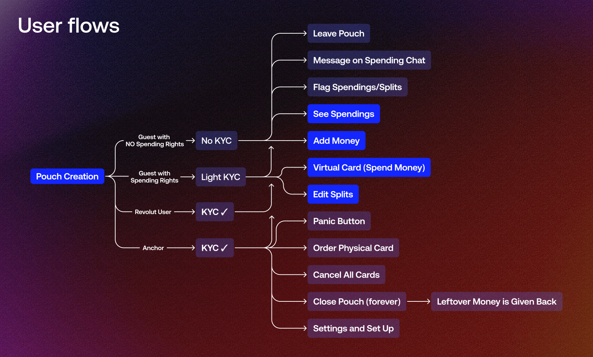
Design decisions
A tiered identity system
The biggest constraint was regulatory: you can't open a joint bank account for a group without full Know Your Customer for each person. The solution was decoupling legal ownership from spending rights while ensuring Anti Money Laundering compliance. One fully verified Revolut user, the Anchor, owns the pot legally. Guests get temporary spending rights via virtual cards without full bank onboarding. A Shadow Ledger tracks each person's contribution in real time, ensuring accountability without requiring everyone to be a full Revolut customer.
-
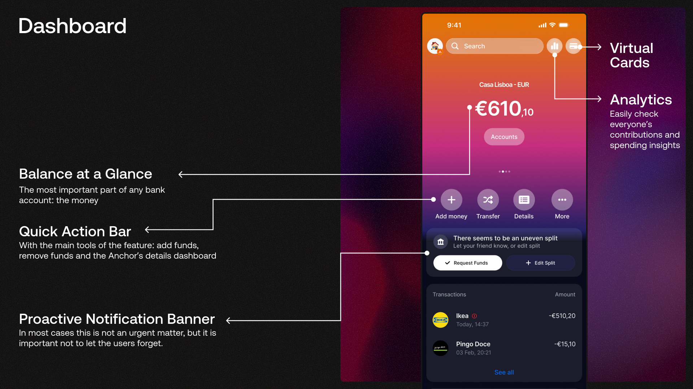
-
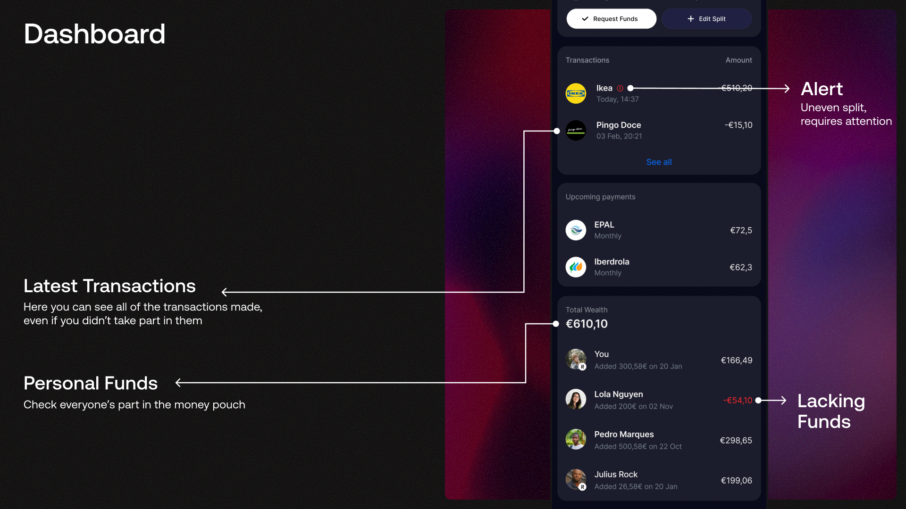
-
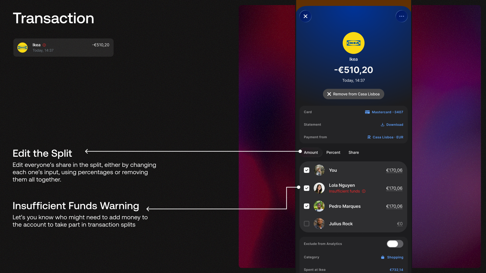
-
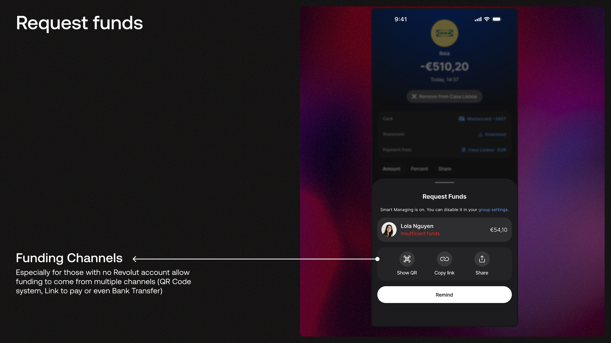
UI language
The Pouch deliberately mirrors Revolut's personal account layout, the same balance display, transaction feed, and quick-action bar. The goal was for the feature to feel like a natural extension of the app, not a separate product. When something new looks like something familiar, the learning curve disappears.
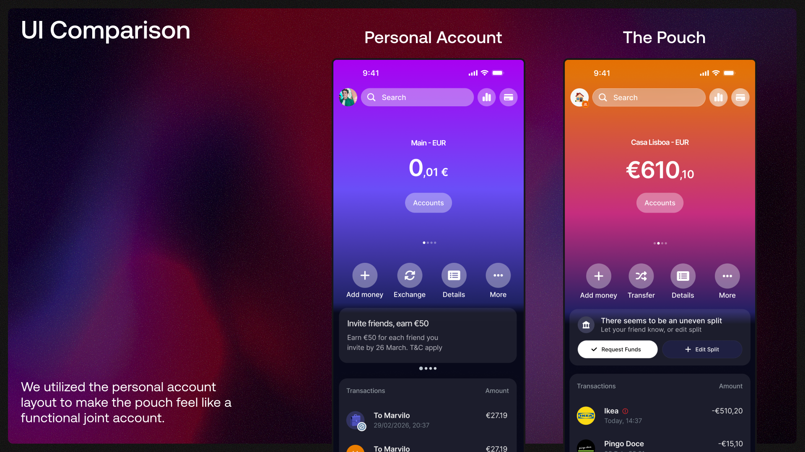
My contribution
Feature mapping, flow design, and UI
My role covered three areas: the initial feature mapping and flow architecture, translating the concept into a structured user journey; the benchmarking of Revolut's existing app to identify where the Pouch should live and how it should behave; and the UI design for the core screens outside the main dashboard, including transaction detail, split editing, fund request, and the guest onboarding flow.
Business case
What's in it for Revolut
- Zero-cost user acquisition through organic Pouch invitations
- Converts Guests into full Revolut account holders
- Interchange fees and FX revenue from Guest spending
- Reactivates inactive users when invited to join a Pouch
Revolut's goal is 100 million daily active users. The Shared Pouch turns every shared moment into a low-friction acquisition funnel.
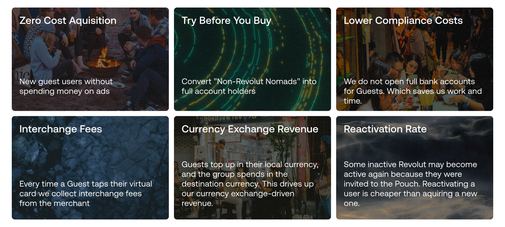
Limitations & next steps
What needs to be explored further
This is a concept feature, not a validated product. The regulatory architecture was designed with compliance intent but not validated with legal or engineering teams. Real implementation would require significant regulatory work across Revolut's operating markets.
- Trust in the Anchor model, further research is needed to understand whether users feel comfortable with one person holding legal responsibility for group spending
- Edge cases, scenarios like non-payment, empty funds, and purchase disputes need to be stress-tested to determine whether the product feels safe or fragile in practice